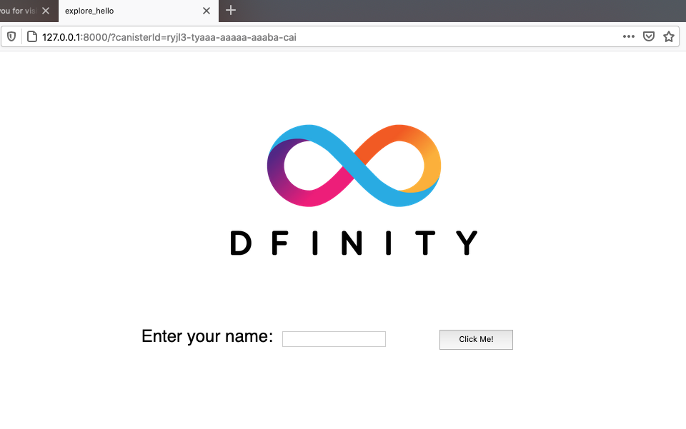

探索默认项目
如果您通过以下链接开始了 DFINITY Canister Software Development Kit (SDK) 之旅Quick start，那么您已经了解了创建可运行的 dapp 的基本工作流程 在 Internet Computer 上。 现在，让我们通过探索创建新项目时添加到工作区的默认文件和文件夹来仔细查看该工作流程。
作为预览，下图说明了在您的计算机上本地运行 Internet Computer 时的开发工作流程。

创建一个新项目
如链接中所述快速启动，Internet Computer 的 dapps 以您创建的 projects 开始。 您可以使用 dfx 可执行命令行界面 (CLI) 创建项目。
为了仔细查看项目中默认包含的文件和文件夹，让我们创建一个新项目来使用。
要创建一个新项目:
-
如果您还没有打开一个终端shell，请在您的本地计算机上打开一个终端shell。
-
如果您使用的是单独的工作文件夹，请导航到您用于 Internet Computer 项目的文件夹。
-
通过运行以下命令创建一个新项目:
dfx new explore_hellodfx new explore_hello命令创建一个新的explore_hello项目，包括新建下的默认项目目录结构 项目名称和项目的新 Git 存储库。 如果你在本地安装了`node.js`，新建项目也会添加一些模板前端代码和依赖。为确保项目名称在 JavaScript、Motoko 和其他上下文中使用时有效，您应该只使用字母数字字符和下划线。 不能包含破折号或任何特殊字符。
-
通过运行以下命令查看默认目录结构:
ls -l explore_hello默认情况下，项目目录结构至少包括一个源子目录、一个模板`README.md
文件和一个默认的dfx.json`配置文件。根据您是否安装了
node.js，您的项目目录可能包含以下部分或全部文件:explore_hello/ ├── README.md # default project documentation ├── dfx.json # project configuration file ├── node_modules # libraries for front-end development ├── package-lock.json ├── package.json ├── src # source files directory │ ├── explore_hello │ │ └── main.mo │ └── explore_hello_assets │ ├── assets │ │ ├── logo.png │ │ ├── main.css │ │ └── sample-asset.txt │ └── src │ ├── index.html │ └── index.js └── webpack.config.js
默认项目目录至少包括以下文件夹和文件:
-
用于在存储库中记录您的项目的默认“README”文件。
-
一个默认的
dfx.json配置文件，用于为您的项目设置可配置选项。 -
dapp 所需的所有源文件的默认
src目录。
默认的
src目录包含一个模板main.mo文件，您可以修改或替换它以包含您的核心编程逻辑。因为本教程侧重于入门的基础知识，所以您只会使用
main.mo文件。 如果你安装了node.js，你的项目目录包括额外的文件和目录，你可以使用它们来定义你的 dapp 的前端接口。 稍后会讨论前端开发和`assets` 文件夹中的模板文件。 -
查看默认配置
默认情况下，创建一个新项目会将一些模板文件添加到您的项目目录中。 您可以编辑这些模板文件以自定义项目的配置设置并包含您自己的代码以加快开发周期。
查看项目的默认配置文件:
-
如果您还没有打开一个终端外壳，请在您的本地计算机上打开一个终端shell。
-
通过运行以下命令切换到您的项目目录:
cd explore_hello -
在文本编辑器中打开
+dxf.json配置文件以查看默认设置。例如:
{ "canisters": { "explore_hello": { "main": "src/explore_hello/main.mo", "type": "motoko" }, "explore_hello_assets": { "dependencies": [ "explore_hello" ], "frontend": { "entrypoint": "src/explore_hello_assets/src/index.js" }, "source": [ "src/explore_hello_assets/assets", "dist/explore_hello_assets/" ], "type": "assets" } }, "defaults": { "build": { "packtool": "" } }, "dfx": "0.9.2", "networks": { "local": { "bind": "127.0.0.1:8000", "type": "ephemeral" } }, "version": 1 }让我们看一些默认设置。
-
settings部分为你的explore_hello项目指定 WebAssembly 模块的名称是explore_hello。 -
+canisters.explore_hello+`键指定要编译的主程序位于+main+设置指定的路径，在这种情况下，+src/explore_hello/main.mo+和+type+ ` 设置表示这是一个`motoko` 程序。 -
canisters.explore_hello_assets键指定有关此项目的前端资产的配置详细信息。 让我们暂时跳过这些。 -
dfx设置用于识别用于创建项目的软件版本。 -
networks部分指定有关您连接的网络的信息。 默认设置将本地容器执行环境绑定到本地主机地址“127.0.0.1”和端口“8000”。如果您有权访问其他 Internet Computer 网络提供商，则“networks”部分可以包含网络别名和用于连接到这些提供商的 URL。
您可以保留默认设置。
-
-
关闭
dfx.json文件以继续。
查看默认程序代码
新项目总是包含一个模板 main.mo 源代码文件。
您可以编辑此文件以包含您自己的代码以加快开发周期。
让我们看一下默认 main.mo 模板文件中的示例程序，作为使用 Motoko 编程语言创建简单 dapp 的起点。
查看项目的默认示例程序:
-
通过运行以下命令检查您是否仍在项目目录中:
pwd -
在文本编辑器中打开
src/explore_hello/main.mo文件并查看模板中的代码:actor { public func greet(name : Text) : async Text { return "Hello, " # name # "!"; }; };让我们来看看这个程序的几个关键元素:
-
你可能会注意到，这个示例代码定义了一个`actor
，而不是一些编程语言需要的main` 函数。 对于 Motoko，main函数隐含在文件本身中。 -
虽然是传统的“Hello, World!” 程序说明了如何使用
print或println函数打印字符串，传统程序不能代表在 Internet Computer 上运行的 Motoko dapps 的典型用例。 -
这个示例程序没有打印函数，而是定义了一个带有公共
greet函数的actor，该函数接受类型为Text的name参数。 -
然后程序使用
async关键字来指示程序返回一个异步消息，该消息由使用"Hello, "、#运算符、name构造的连接文本字符串组成 参数和`"!"`。
稍后我们将探索使用
actor对象和异步消息处理的代码。 现在，您可以继续下一部分。 -
-
关闭
main.mo文件以继续。
启动本地容器执行环境
在部署默认项目之前，您需要连接到本地容器执行环境或 Internet Computer 区块链主网。
启动本地容器执行环境需要一个 dfx.json 文件，因此您应该确保您位于项目的根目录中。
对于本教程，您应该有两个独立的终端 shell，以便您可以在一个终端中启动和查看网络操作并在另一个终端中管理您的项目。
启动本地容器执行环境:
-
在本地计算机上打开一个新的终端窗口或一个新的终端选项卡。
-
如有必要，导航到项目的根目录。
-
您现在应该打开了两个终端。
-
您应该将 project 目录 作为您的 current 工作目录。
-
-
通过运行以下命令启动本地容器执行环境:
dfx start根据您的平台和本地安全设置，您可能会看到显示的警告。 如果系统提示您允许或拒绝传入的网络连接，请单击 Allow。
启动本地容器执行环境后，您将拥有一个终端来显示有关网络操作的消息，而另一个终端则用于执行与项目相关的任务。
-
让显示网络操作的终端保持打开状态，然后将注意力转移到创建新项目的终端上。
注册容器标识符
连接到本地容器执行环境后，您可以向网络注册，为您的项目生成唯一的、特定于网络的*容器标识符*。
在快速入门 教程中，此步骤是作为 dfx deploy 命令工作流程的一部分执行的。
本教程演示如何独立执行每个操作。
要为本地网络注册容器标识符:
-
如果需要，请检查您是否仍在项目目录中。
-
通过运行以下命令为项目中的容器注册唯一容器标识符:
dfx canister create --all该命令显示在
dfx.json配置文件中定义的容器的特定于网络的容器标识符。Creating a wallet canister on the local network. The wallet canister on the "local" network for user "pubs-id" is "rwlgt-iiaaa-aaaaa-aaaaa-cai" Creating canister "explore_hello"... "explore_hello" canister created with canister id: "rrkah-fqaaa-aaaaa-aaaaq-cai" Creating canister "explore_hello_assets"... "explore_hello_assets" canister created with canister id: "ryjl3-tyaaa-aaaaa-aaaba-cai"
因为您连接到本地容器执行环境，所以这些容器标识符仅在本地有效，并为项目存储在
.dfx/local/canister_ids.json文件中。例如:
{ "explore_hello": { "local": "rrkah-fqaaa-aaaaa-aaaaq-cai" }, "explore_hello_assets": { "local": "ryjl3-tyaaa-aaaaa-aaaba-cai" } }
构建 dapp
现在您已经探索了默认配置设置和程序代码并启动了本地容器执行环境，让我们将默认程序编译成可执行的 WebAssembly 模块。
要构建程序可执行文件:
-
在本地计算机的终端 shell 中，导航到您的
explore_hello项目目录。您必须从项目目录结构中运行
dfx build命令。 -
通过运行以下命令构建可执行容器:
dfx build您应该会看到类似于以下内容的输出:
Building canisters... Building frontend...
因为您连接到本地容器执行环境，所以`dfx build
命令会在项目的.dfx/local/目录下添加canisters`目录。 -
通过运行以下命令，验证由
dfx build命令创建的.dfx/local/canisters/explore_hello目录是否包含 WebAssembly 和相关应用程序文件。ls -l .dfx/local/canisters/explore_hello/例如，该命令返回类似于以下内容的输出:
-rw-r--r-- 1 pubs staff 178 Apr 6 14:25 explore_hello.d.ts -rw-r--r-- 1 pubs staff 41 Apr 6 14:25 explore_hello.did -rw-r--r-- 1 pubs staff 155 Apr 6 14:25 explore_hello.did.js -rw-r--r-- 1 pubs staff 142 Apr 6 14:25 explore_hello.js -rw-r--r-- 1 pubs staff 157613 Apr 6 14:25 explore_hello.wasm
canisters/explore_hello目录包含以下关键文件:-
explore_hello.did文件包含主 dapp 的接口描述。 -
explore_hello.did.js文件包含 dapp 中函数的容器接口的 JavaScript 表示。 -
explore_hello.js文件包含 dapp 容器接口的 JavaScript 表示。 -
explore_hello.wasm文件包含项目中使用的资产的已编译 WebAssembly。
canisters/explore_hello_assets目录包含类似的文件来描述与您的项目相关的前端资产。除了
canisters/explore_hello和canisters/explore_hello_assets目录中的文件之外，dfx build命令还会创建一个idl目录。 -
-
验证是否已创建一个新文件夹，
src/declarations。此文件夹将包括来自
.dfx/local的文件夹的副本，除了 wasm。 它们不包含任何秘密，我们建议将这些文件与您的其余源代码一起提交。
在本地部署项目
您已经看到 dfx build 命令在 canisters 目录中为您的项目创建了几个工件。
要在 Internet Computer 网络上部署 dapp，需要 WebAssembly 模块和 canister_manifest.json 文件。
部署到本地容器执行环境:
-
在本地计算机上的终端 shell 中，导航到您的
explore_hello项目目录。 -
通过运行以下命令在本地网络上部署您的
explore_hello项目:dfx canister install --all该命令显示类似于以下内容的输出:
Installing code for canister explore_hello, with canister_id rrkah-fqaaa-aaaaa-aaaaq-cai Installing code for canister explore_hello_assets, with canister_id ryjl3-tyaaa-aaaaa-aaaba-cai Authorizing our identity (pubs-id) to the asset canister... Uploading assets to asset canister... /index.html 1/1 (480 bytes) /index.js 1/1 (296836 bytes) /main.css 1/1 (484 bytes) /sample-asset.txt 1/1 (24 bytes) /logo.png 1/1 (25397 bytes) /index.js.map 1/1 (964679 bytes) /index.js.LICENSE.txt 1/1 (499 bytes)
-
运行
dfx canister call命令并通过运行以下命令指定要调用的 dapp 和函数:dfx canister call explore_hello greet '("everyone": text)'该命令指定:
-
explore_hello作为你想要调用的 canister 智能合约 或 dapp 的名称。 -
greet作为您要调用的特定方法或函数。 -
everyone作为参数传递给greet函数。
-
-
验证命令是否显示
greet函数的返回值。例如:
("Hello, everyone!")
查看默认前端
如果您在开发环境中安装了 node.js，则您的项目包含一个简单的前端示例，该示例使用模板 index.js JavaScript 文件在浏览器中访问 explore_hello dapp。
探索默认的前端模板:
-
在您的本地计算机上打开一个终端 shell（如果您还没有打开），然后导航到您的
explore_hello项目目录。 -
在文本编辑器中打开
src/explore_hello_assets/src/index.js文件并查看模板脚本中的代码:import { explore_hello } from "../../declarations/explore_hello"; document.getElementById("clickMeBtn").addEventListener("click", async () => { const name = document.getElementById("name").value.toString(); // Interact with explore_hello actor, calling the greet method const greeting = await explore_hello.greet(name); document.getElementById("greeting").innerText = greeting; });模板
index.js从我们新创建的declarations目录中导入了一个explore_hello代理。 代理会自动配置为与我们在Main.mo中创建的界面进行交互，并在用户单击greeting按钮时使用AnonymousIdentity调用我们的容器。此文件与模板
index.html文件一起使用，以显示带有图像资源、输入字段和greet功能按钮的 HTML 页面。 -
关闭
index.js文件以继续。 -
通过运行以下命令查看为项目创建的前端资产:
ls -l .dfx/local/canisters/explore_hello_assets/该命令显示类似于以下内容的输出:
drwxr-xr-x 9 pubs staff 288 Apr 6 14:25 assets -r--r--r-- 1 pubs staff 2931 Dec 31 1969 assetstorage.did -r--r--r-- 1 pubs staff 265823 Dec 31 1969 assetstorage.wasm -rw-r--r-- 1 pubs staff 3651 Apr 6 14:25 explore_hello_assets.d.ts -rw-rw-rw- 1 pubs staff 2931 Dec 31 1969 explore_hello_assets.did -rw-r--r-- 1 pubs staff 4236 Apr 6 14:25 explore_hello_assets.did.js -rw-r--r-- 1 pubs staff 149 Apr 6 14:25 explore_hello_assets.js -rw-rw-rw- 1 pubs staff 265823 Dec 31 1969 explore_hello_assets.wasm
这些文件是由
dfx build命令使用节点模块和模板index.js文件自动生成的。 -
使用
npm start启动开发服务器。 -
打开浏览器并导航到`local
网络地址和端口号—+127.0.0.1:8080` -
验证您是否看到示例应用程序的 HTML 页面。
例如:

-
键入问候语，然后单击 Click Me 以返回问候语。
例如: